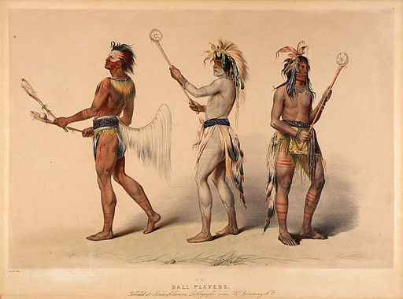
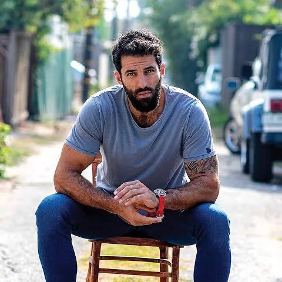
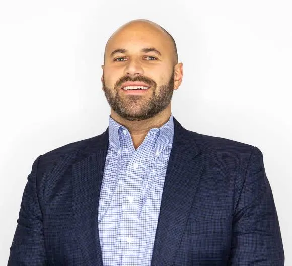
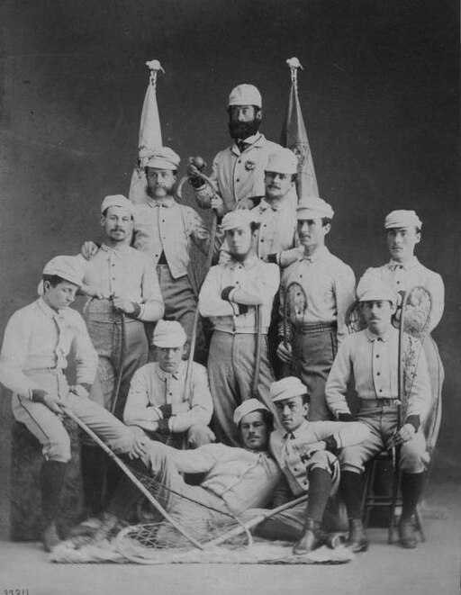

What is the history of lacrosse?

Lacrosse was originally invented by the native americans back in the 12th century. It was originally known as stickball, and the games were major events with 100 to 1,000 men taking part. The games would take place over several days.
It was first played by the Haudenosaunee(hoe-dee-no-SHOW-nee), or Iroquois(ee-ruh-kwaa) people. The game actually had a spiritual purpose, which was to heal individuals and/or communities.
It was first given the name lacrosse in the 1600s when French Jesuit missionaries first witnessed the game. The game of lacrosse became "formally" known as a sport in 1856 with the founding of the Montreal Lacrosse Club in Canada.
In the late 1800s and early 1900s lacrosse finally started to spread across Canada, the United States, Australia and the United Kingdom.
The International Federation of Womens Lacrosse Association was formed in 1972 followed by the International Federation of Lacrosse(men) in 1974. The two then merged together in 2008 to form the Federation of International Lacrosse, allowing them to govern and promote the sport globally.
Finally on October 22nd 2018 Former lacrosse player's Paul Rabil and Mike Rabil officially announced the Premier Lacrosse League(PLL)

PLL(Premier Lacrosse League) is an elite professional field lacrosse league in the US.
PLL has 8 teams with 25 player rosters. There are 10 regular seasons, an all-star game, and playoffs.
The teams feature top professional athletes, including 86 All-Americans, 25 US national members, and 10 former Tewaaraton Award winners(The Tewaaraton Award is an annual award honoring the top male and female lacrosse college players in the United States).


Some of the greatest lacrosse players of all time are:
{kind=link}
{kind=link}